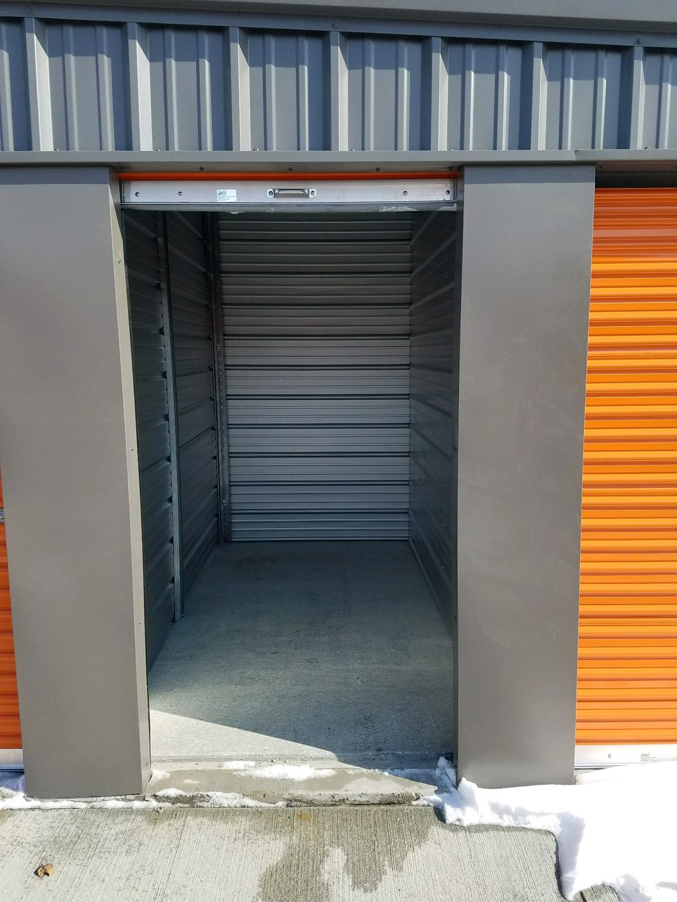
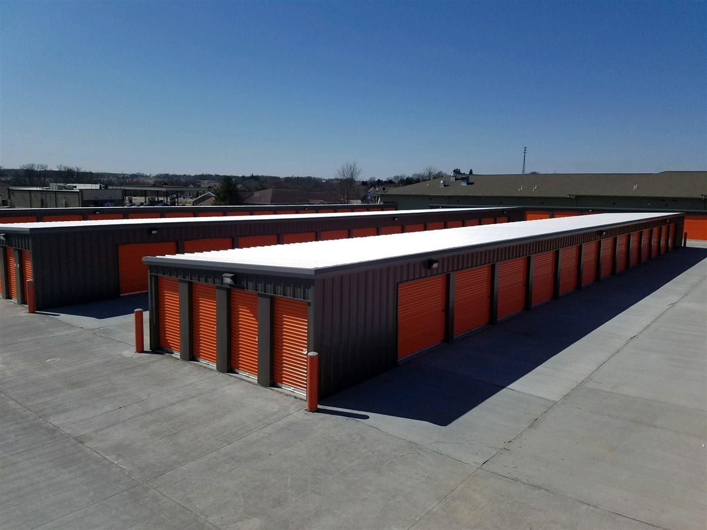
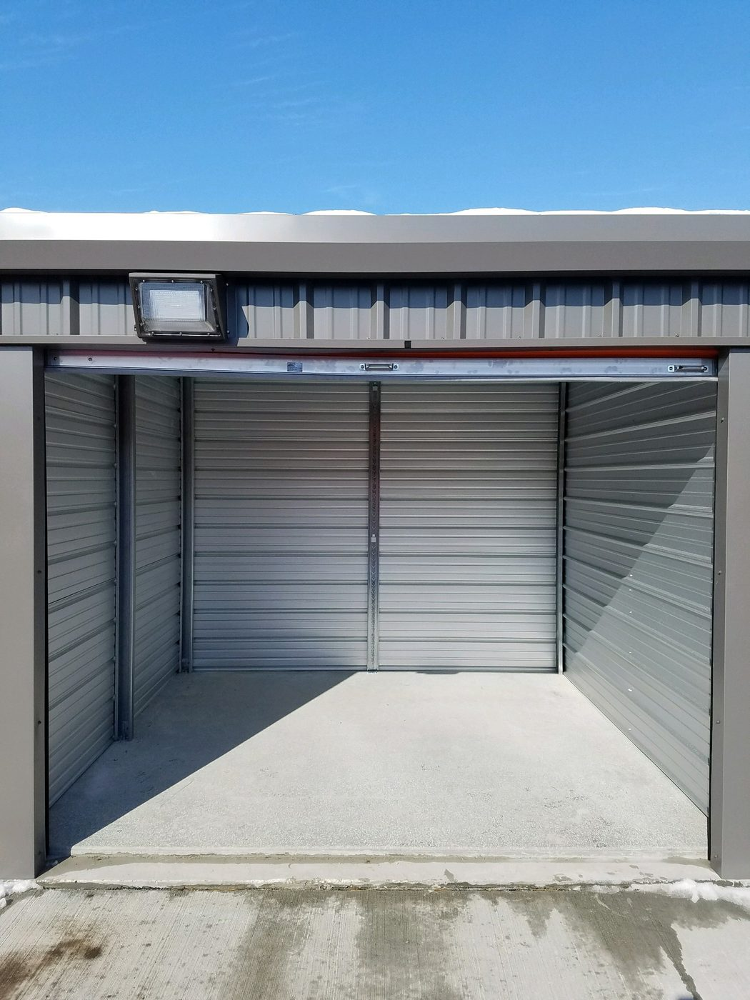
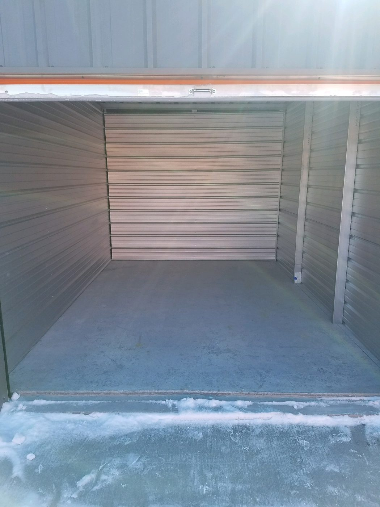
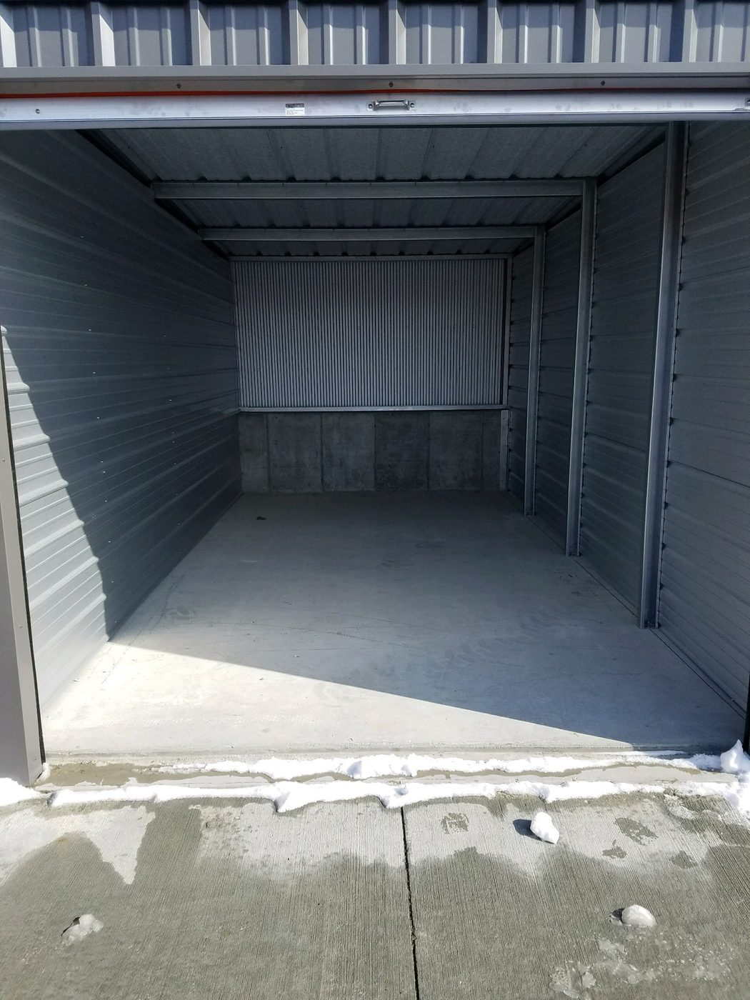
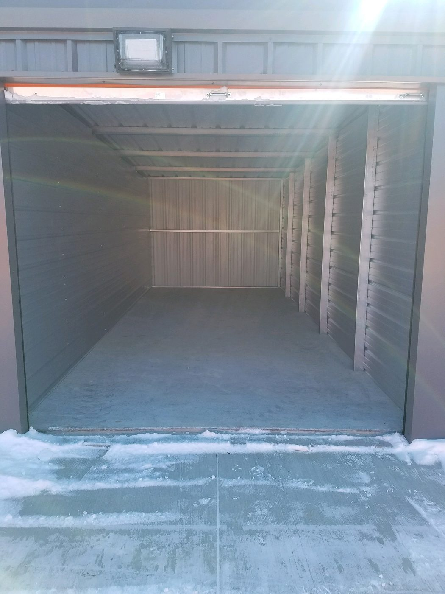
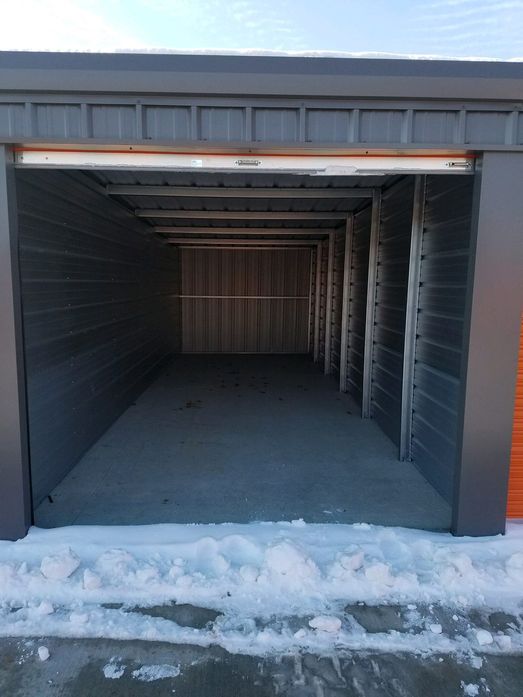
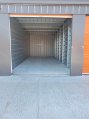
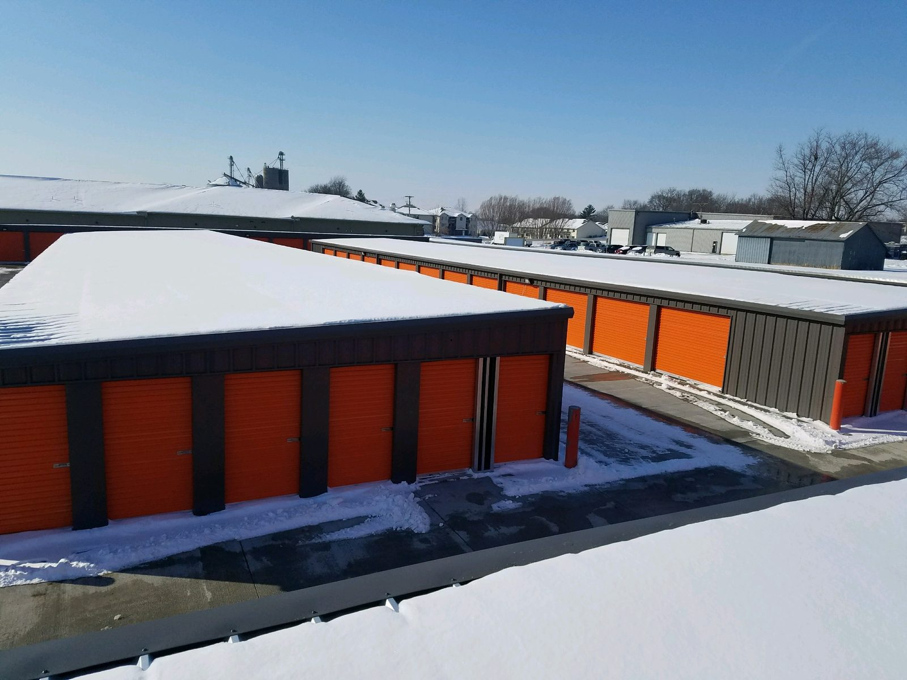

5 x 10 storage unit
It fits furnishings of a mid-sized bedroom, including a queen-sized bed, a dresser, a TV and several small to medium-sized boxes.

Dan owns the units on Windflower Lane. If you need a unit in Solon, call him.
“I highly recommend V's! Dan and his business partner at V's in Solon are the best! They even threw in a lock.”
“Storage units look brand new, secure with gate, and we were able to book our units totally online. The owner followed up with a phone call to answer any questions we had. We even opened the unit to find a lock provided!”
“V's is the nicest and easiest place I've ever rented through. Super easy to go online and sign up to rent. Also very clean. Definitely would recommend.”
V's Self Storage is at 504 Windflower Lane, Solon, IA 52333, east of Highway 1. It is the local storage in Solon. RV and boat storage is not at this lot. That is on IWV Road in Iowa City.
You can rent a unit online. Choose a size, then finish on the rental page.

It fits furnishings of a mid-sized bedroom, including a queen-sized bed, a dresser, a TV and several small to medium-sized boxes.

It fits the contents of an entire family room or two full bedrooms, including several small to medium-sized boxes.

It fits the contents of three full bedrooms and larger items such as a piano, couches, tables, or large-screen TVs, plus several medium to large-sized boxes.

It fits the contents of a multi-bedroom house, including several oversized items like a couch, a refrigerator, a washer/dryer and a dining room set or several large boxes. Fits most cars, trucks, and some boats.

It fits the contents of a multi-bedroom house, including several oversized items like a couch, a refrigerator, a washer/dryer and a dining room set or several large boxes. Fits all cars, trucks, and some boats.

It fits the contents of a multi-bedroom house, including several oversized items like a couch, a refrigerator, a washer/dryer and a dining room set or several large boxes. Fits all cars, trucks, and some boats.

It fits the contents of a very large house. Can fit all cars, most truck, small trailers, campers, and boats. Would also be the ideal space for a contractor. Door is 10' high and 10' wide.

It fits the contents of a very large house. Can fit all cars, most truck, small trailers, campers, and boats. Would also be the ideal space for a contractor. Door height is 10'.
Yes. V's Self Storage is at 504 Windflower Lane, Solon, IA 52333, east of Highway 1. Dan owns it. Household units start at $74 a month.
Dan, the owner. Call or text (319) 333-4845. He is the only person you will talk to.
Yes. Choose a size on this page, then finish on the rental page.